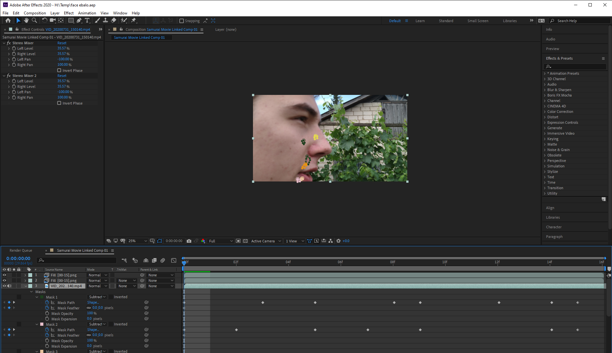
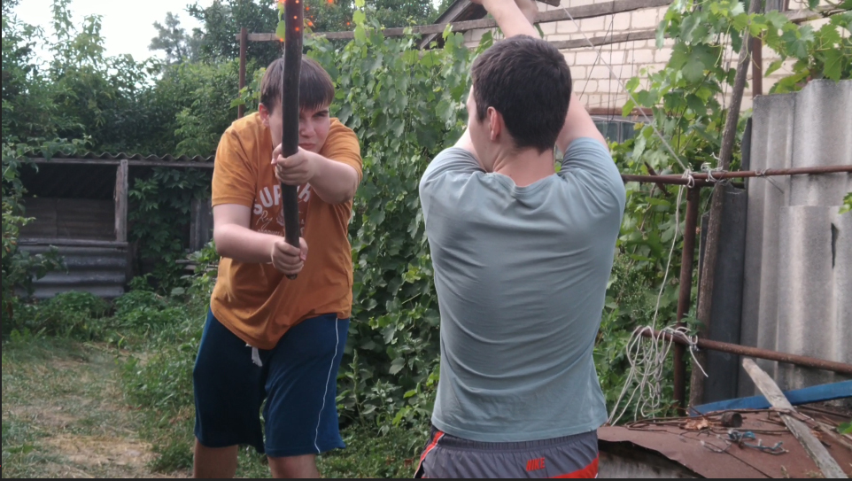
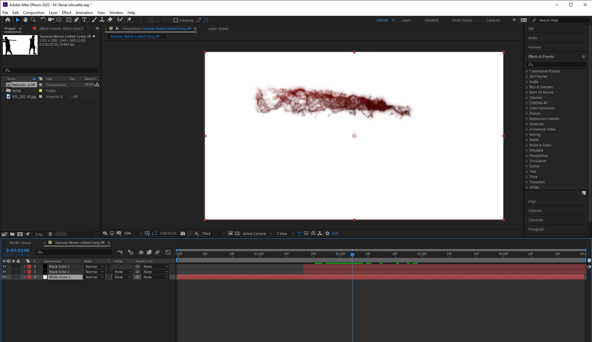

Adobe After Effects is a digital visual effect, motion graphics, and compositing application developed by Adobe Systems and used in the post-production process of film making, video games, and television production. Among other things, After Effects can be used for keying, tracking, compositing, and animation. It also functions as a very basic non-linear editor, audio editor, and media transcoder. In 2019, the program won an Academy Award for scientific and technical achievement.

